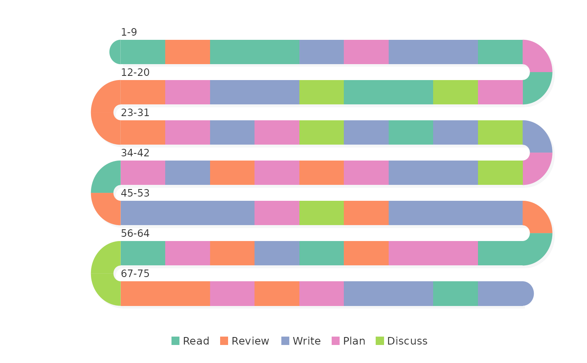
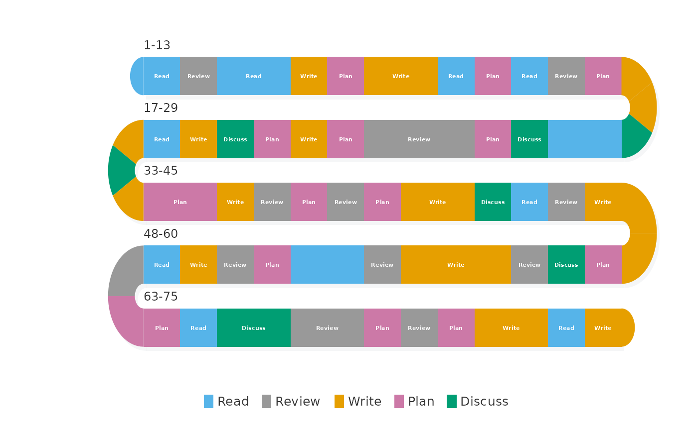
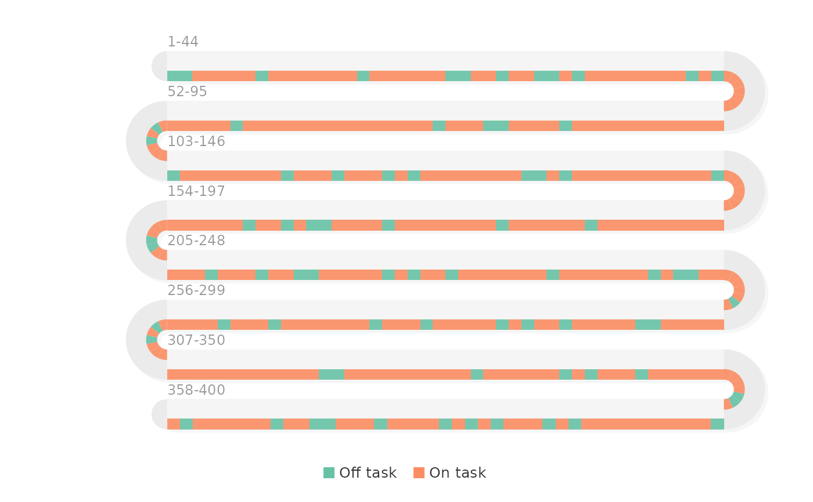

Plot a long state sequence as blocks along a serpentine path
Source:R/sequence_snake.R
sequence_snake.RdA sequence snake shows one long categorical sequence, such as the actions in a learning session or a person's daily states over months, as a row of colored blocks, one per position. The row is folded into bands joined by U-turns, and the blocks continue through the U-turns, so a sequence of several hundred positions fits in one panel while the order of positions is kept. Runs, recurrences and changes of state can be followed along the path, as in a sequence index plot of a single sequence (Gabadinho et al., 2011).
sequence_snake() accepts the sequence as a vector, a comma-separated
string, a list, or a data frame whose first character or factor column
holds the states. Blocks can carry position numbers, state names or other
labels, and the path can be annotated with ruler ticks, a label for each
band and labels at changes of state. With style = "rug" blocks become
thin ticks on a light band, which keeps many positions legible.
For many sequences at once use multi_snake(). For phases defined by start
and end dates use timeline_snake(), which builds the monthly sequence and
its labels from the dates.
Usage
sequence_snake(
sequence,
states = NULL,
colors = NULL,
rows = NULL,
band_height = 28,
band_gap = 18,
plot_width = 500,
margin = c(top = 30, right = 10, bottom = 50, left = 80),
orientation = "horizontal",
start_from = "left",
flow = c("natural", "snake"),
show_labels = TRUE,
show_legend = TRUE,
show_numbers = FALSE,
show_state = FALSE,
state_size = 0.35,
show_ticks = FALSE,
tick_labels = NULL,
transition_labels = NULL,
transition_pos = NULL,
tick_color = "#333333",
tick_length = 5,
tick_size = 0.4,
style = c("block", "rug"),
band_color = "#3d3d4a",
rug_opacity = 0.9,
jitter = 0,
border_color = NA,
block_labels = NULL,
band_labels = NULL,
title = NULL,
background = "white",
shadow = TRUE,
text_size = 0.5,
legend_text_size = 0.8
)Arguments
- sequence
The states in order: a character, factor or integer vector; a single comma-separated string such as
"A,B,C"; a list; or a data frame, whose first character or factor column is used. Missing values are dropped with a warning.- states
State labels in legend order.
NULL(default) takes them in order of first appearance. Every state insequencemust be listed.- colors
State colors: a vector named by state, or an unnamed vector recycled over
states. States missing from a named vector are drawn in grey.NULL(default) uses a built-in qualitative palette.- rows
Number of bands.
NULL(default) uses one band per 11 positions, rounded up.- band_height
Height of each band in plot units (default 28).
- band_gap
Gap between bands in plot units (default 18).
- plot_width
Length of each band in plot units (default 500).
- margin
Named numeric vector of
top,right,bottomandleftmargins in plot units (defaultc(top = 30, right = 10, bottom = 50, left = 80)).- orientation
"horizontal"(default)."vertical"turns the bands into columns but places the blocks across each column rather than along it, so the horizontal layout is recommended.- start_from
Side on which the first band starts:
"left"(default) or"right".- flow
"natural"(default): every band reads in the same direction, like lines of text."snake": bands alternate direction, so the sequence runs on through each U-turn.- show_labels
Label each band with the range of positions it holds (default
TRUE).- show_legend
Draw the state legend (default
TRUE).- show_numbers
Print each block's position inside it (default
FALSE).- show_state
Print the state name inside each block (default
FALSE).- state_size
Text size of the state names (default 0.35).
- show_ticks
Draw ruler ticks at block boundaries, outside the bands (default
FALSE).- tick_labels
Labels for evenly spaced ruler marks on every band, such as
month.abb. Setting them turns onshow_ticks.- transition_labels
Labels for the points where the state changes, in order; the first
length(transition_labels)changes are labelled.- transition_pos
Positions of
transition_labelsalong the sequence, in blocks; fractions such as6.5are allowed.NULL(default) places the labels at the changes of state.- tick_color
Color of ticks and of band and transition labels (default
"#333333").- tick_length
Length of ticks in plot units (default 5).
- tick_size
Text size of tick, band and transition labels (default 0.4).
- style
"block"(default) fills each band with blocks;"rug"draws thin ticks on a light band, suited to sequences with many positions.- band_color
Not used at present; rug bands are drawn light grey.
- rug_opacity
Opacity of the rug ticks, between 0 and 1 (default 0.9).
- jitter
For
style = "rug", vertical scatter of the ticks as a fraction of the band height (default 0, none). The scatter is random; callset.seed()first for a reproducible plot.- border_color
Color of block outlines, or
NA(default) for none.- block_labels
Labels for the blocks, one per position. They replace the position numbers, and are drawn below the blocks when ruler ticks are shown.
- band_labels
One label per band (length
rows), printed below the band, for example a year.- title
Plot title, or
NULL(default) for none.- background
Background color (default
"white").- shadow
Draw drop shadows (default
TRUE).- text_size
Text size of block numbers and block labels (default 0.5).
- legend_text_size
Size of the legend text (default 0.8).
References
Gabadinho, A., Ritschard, G., Müller, N. S., & Studer, M. (2011). Analyzing and visualizing state sequences in R with TraMineR. Journal of Statistical Software, 40(4), 1-37. doi:10.18637/jss.v040.i04
See also
timeline_snake() for dated phases; multi_snake() for many
sequences; activity_snake() for event times within days.
Examples
# 75 actions in a learning session
set.seed(42)
actions <- sample(c("Read", "Write", "Discuss", "Plan", "Review"), 75,
replace = TRUE)
sequence_snake(actions)

sequence_snake(actions, rows = 5, flow = "snake", show_state = TRUE,
colors = c(Read = "#56B4E9", Write = "#E69F00",
Discuss = "#009E73", Plan = "#CC79A7",
Review = "#999999"))

# 400 observations of on- and off-task behaviour as a rug
on_task <- sample(c("On task", "Off task"), 400, replace = TRUE,
prob = c(0.8, 0.2))
sequence_snake(on_task, style = "rug", rows = 8)
